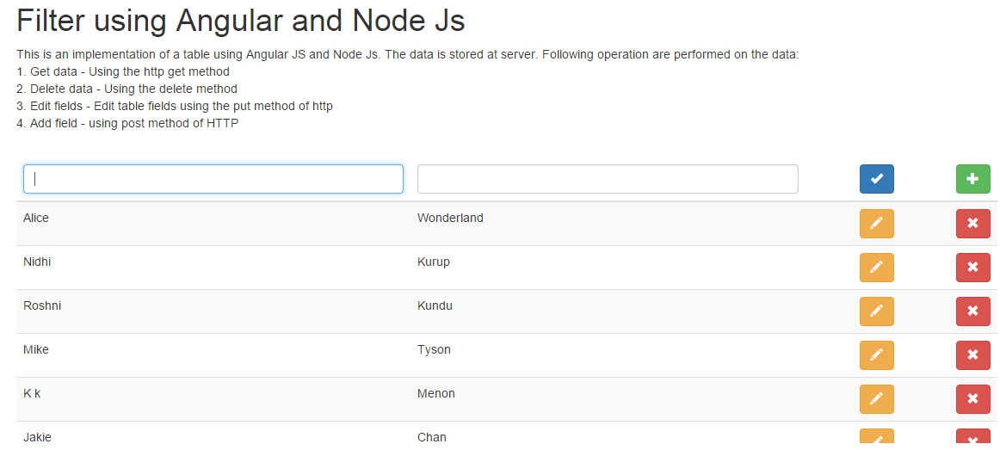
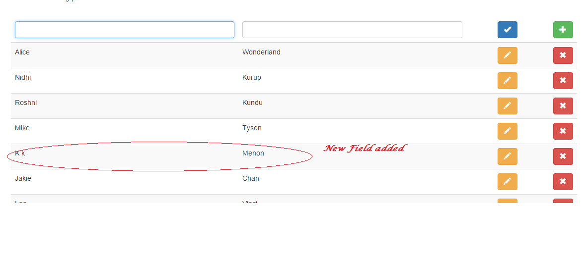

The page show an data adding functionality to the server using angularjs and node js. The developer data consists of the array of developer details (firstName, lastName) stored at the server. New developer is adding to this list from UI .
 The experiment demonstrates how to add new developer records to data stored in server using angular js. We use the http post method to call a function on the server side and pass the developer object to be added. The server method updated the data set and return the new data set to show in the view.
Call to the server
$scope.add = function (developer) {
console.log(developer);
$http.post("/developers", developer).
success(function (response) {
$scope.developers = response;
});
};